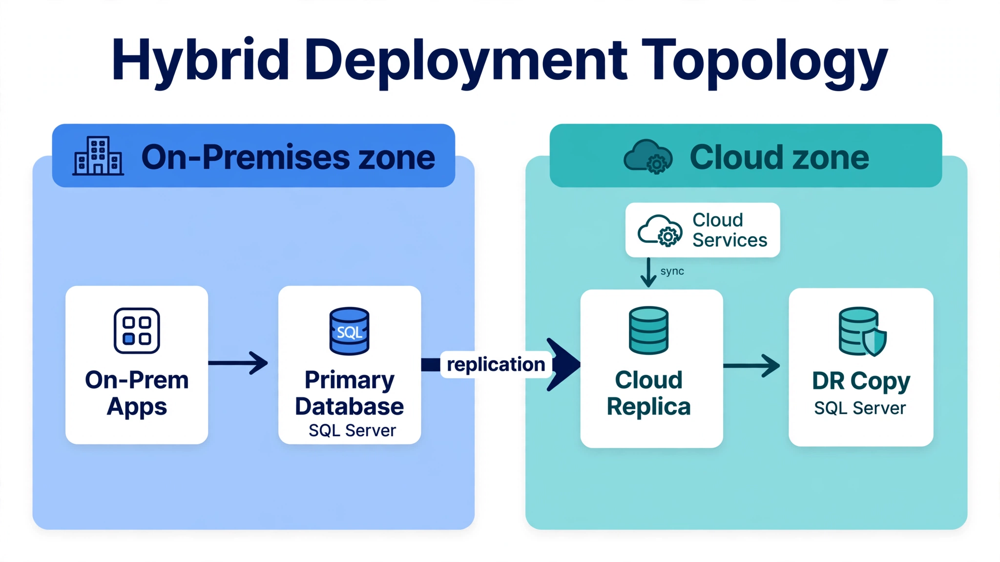

Chapter 20: Deployment Models
Where your database runs is just as important as how it's configured. A brilliantly tuned SQL Server instance on undersized hardware, or a deployment without proper high availability, will still fail the business. Deployment models define the physical and logical architecture of your database infrastructure — on-premises hardware, virtual machines, containers, cloud-managed services, and hybrid combinations of all of these. This chapter walks through each model, explains how SQL Server behaves within it, and helps you make informed decisions about where and how to deploy databases for production workloads. By the end, you'll understand not just what the options are, but when and why experienced DBAs choose one over another.
---
On-Premises Deployment: The Foundation
On-premises deployment means your database runs on hardware you own and operate, whether in a company data center or a co-location facility. It's the oldest model and still the most common in regulated industries, large enterprises, and organizations with significant capital investments in physical infrastructure.
For SQL Server, on-premises deployment gives you the highest degree of control. You choose the CPU, memory, storage subsystem, and network topology. You control the OS, kernel parameters, file system layout, and every configuration knob. Nothing happens to your environment without your knowledge and approval. That control comes with corresponding responsibility — hardware failures, OS patching, storage growth, and firmware updates all land on your team.
When sizing on-premises hardware for SQL Server, memory is typically the most important resource: set max server memory to total RAM minus the OS reserve, and ensure total RAM is large enough to hold your working set plus that overhead. Storage matters enormously — local NVMe SSDs dramatically outperform SAN-attached spinning disks for OLTP workloads, while SAN may still suit large data warehouses where sequential throughput dominates.
SQL Server manages its own buffer pool directly and will aggressively claim available RAM up to the max server memory limit. Forgetting to set this limit is a classic mistake that starves the OS of memory on a shared machine — set it on every instance, including dev.
-- Check current max server memory setting
SELECT name, value_in_use, description
FROM sys.configurations
WHERE name IN (
'max server memory (MB)',
'min server memory (MB)',
'max worker threads'
);One often-overlooked aspect of on-premises deployment is the storage layout. SQL Server benefits from separating data, transaction log, and tempdb onto different physical devices. This isn't just about throughput — it's about I/O isolation. A long-running sort operation that hammers tempdb shouldn't affect transaction-log write latency, which directly impacts transaction commit performance.
Transaction log files (.ldf) should be on dedicated storage, and tempdb files should sit on the fastest available storage, ideally local SSDs even in a SAN environment, because tempdb contention is one of the most common SQL Server performance problems in production.
Physical hardware also gives you predictable, consistent performance — no noisy neighbor problems, no shared hypervisor overhead, no network-based storage latency surprises. For latency-sensitive applications — financial transaction processing, real-time trading systems, high-frequency manufacturing control systems — on-premises dedicated hardware often remains the right choice even when cloud options exist.
---
Virtualized Environments: Flexibility with Tradeoffs
Virtualization has become the default deployment model for databases in most organizations, even on-premises. VMware vSphere, Microsoft Hyper-V, and KVM-based platforms allow multiple database VMs to share physical hardware, with resource boundaries defined in software. This flexibility is valuable — you can move VMs, resize resources, and snapshot environments without touching physical hardware. But virtualization introduces behaviors that every DBA needs to understand.
The most significant issue is CPU scheduling. A physical machine with 32 cores can run 32 threads simultaneously. A hypervisor running multiple VMs on that same hardware may allocate those 32 cores to 8 VMs, each believing it has 8 dedicated cores. In reality, all VMs compete for physical CPU time through the hypervisor scheduler. When your database VM is ready to run but physical cores are busy serving other VMs, it experiences CPU ready time — time spent waiting to be scheduled. High CPU ready time directly translates to query latency, particularly for short OLTP queries where even a few milliseconds of scheduling delay is noticeable.
Memory ballooning and transparent page sharing are real hazards. Hypervisors may reclaim memory from your database VM under pressure, forcing buffer pool evictions — SQL Server logs a warning in the Error Log and buffer pool hit ratios degrade. Lock the VM's memory reservation so the hypervisor can't reclaim buffer pool pages under pressure.
Storage in virtualized environments typically passes through additional layers. Virtual disks (VMDK files on VMFS, or VHDs/VHDXs on Hyper-V) add overhead compared to bare-metal block devices. Storage vMotion and snapshot operations can impact disk I/O unexpectedly. The best practice for performance-critical database VMs is to use raw device mapping (RDM on VMware) or pass-through disk attachments, bypassing the virtual disk layer entirely.
Despite these challenges, virtualized databases work well in practice when the environment is properly configured. Reserve CPU and memory resources for database VMs rather than leaving them subject to dynamic contention. Disable memory ballooning for database guests. Ensure VM-level I/O limits are not inadvertently throttling database storage throughput.
-- Check buffer pool hit ratio and I/O stalls
SELECT
DB_NAME(vfs.database_id) AS database_name,
mf.physical_name,
vfs.io_stall_read_ms,
vfs.io_stall_write_ms,
vfs.num_of_reads,
vfs.num_of_writes,
CASE WHEN vfs.num_of_reads > 0
THEN vfs.io_stall_read_ms / vfs.num_of_reads
ELSE 0 END AS avg_read_ms,
CASE WHEN vfs.num_of_writes > 0
THEN vfs.io_stall_write_ms / vfs.num_of_writes
ELSE 0 END AS avg_write_ms
FROM sys.dm_io_virtual_file_stats(NULL, NULL) vfs
JOIN sys.master_files mf
ON vfs.database_id = mf.database_id
AND vfs.file_id = mf.file_id
ORDER BY vfs.io_stall_read_ms DESC;Hyper-V deserves specific mention for SQL Server deployments. Microsoft has optimized the SQL Server / Hyper-V stack over many years, and there are storage enlightenments (direct block device access through the virtual machine bus) that reduce overhead for SQL Server VMs running on Windows Server Hyper-V hosts. This tight integration means the SQL Server on Hyper-V combination often performs closer to bare metal than a comparable SQL Server on VMware configuration, though both can be production-grade with proper tuning.
One deployment pattern that works well in virtualized environments is using dedicated physical hosts for your largest or most critical database VMs. This gives you VM management flexibility (live migration, centralized backups, DR orchestration through VM replication) while avoiding the resource contention of a shared host. The database gets guaranteed physical resources, and you still benefit from the operational tooling that virtualization provides.
---
Cloud-Managed Database Services: Speed at the Cost of Control
Cloud-managed database services — Amazon RDS, Azure SQL Database, Google Cloud SQL, and their equivalents — represent a fundamentally different deployment philosophy. The cloud provider manages the underlying hardware, OS, storage provisioning, high availability, and backups. You get a database endpoint and the configuration options the provider chooses to expose. This dramatically reduces operational overhead, particularly for teams that don't have dedicated DBA staff.
Managed SQL Server offerings — Amazon RDS for SQL Server, Azure SQL Database, SQL Server on Azure VMs — run inside a managed abstraction. You cannot access the underlying OS. You cannot use BULK INSERT with local filesystem paths on Azure SQL Database. You cannot install arbitrary components. The managed environment constrains what you can do, and understanding those constraints before committing to a managed service is essential.
Azure SQL Database is also not SQL Server — it's a cloud-native database service that shares SQL Server's query engine but behaves differently in many operational dimensions. There is no SQL Server Agent in Azure SQL Database's base tier (you use Elastic Jobs instead). Linked server configurations work differently. Database mail, certain DBCC commands, and some system stored procedures are unavailable or function differently. Amazon RDS for SQL Server is closer to a full SQL Server installation but still restricts sysadmin-level operations and direct OS access.
That said, managed services handle genuinely hard operational problems well. Point-in-time recovery, automated backups with configurable retention, Multi-AZ high availability, automated minor version patching, and built-in monitoring are all provided without you building any of that infrastructure yourself. For a startup or a development team building a new application, a managed service lets you focus on the application instead of the database platform.
-- On Azure SQL Database, check available features and service tier
SELECT
DATABASEPROPERTYEX(DB_NAME(), 'Edition') AS edition,
DATABASEPROPERTYEX(DB_NAME(), 'ServiceObjective') AS service_objective,
DATABASEPROPERTYEX(DB_NAME(), 'MaxSizeInBytes') AS max_size_bytes;
-- Check which features are supported in current environment
SELECT feature_name, is_enabled
FROM sys.dm_db_persisted_sku_features;Performance in managed services is tied to the instance class or service tier you select. RDS for SQL Server is sized by instance type (db.t3.medium, db.r6g.4xlarge, etc.), with storage IOPS included or purchasable separately depending on the storage type. Azure SQL Database uses DTUs or vCores, with corresponding IOPS limits tied to the tier. Understanding these limits matters because a query that runs fine in development on a large instance may hit I/O or CPU throttling in production on an undersized tier.
Azure SQL Database's Hyperscale tier deserves mention as a disaggregated-storage offering: compute and storage scale independently, with page servers replicating data across availability zones. This changes the HA model — a primary failure results in fast failover because the new primary attaches to the same shared storage. For workloads that need strong availability SLAs without managing AGs manually, Hyperscale (or Azure SQL Managed Instance for near-on-premises parity) is compelling. The tradeoff is the managed abstraction: some on-premises features and knobs aren't available, and performance characteristics differ from a tuned bare-metal instance.
---
Containerized Deployments: SQL Server in Docker and Kubernetes
Running databases in containers is no longer experimental — it's a production deployment pattern. Containers provide environment consistency, fast startup, easy version upgrades, and alignment with modern application deployment tooling. But containers introduce a different set of challenges for stateful workloads like databases, and understanding those challenges determines whether containerization is appropriate for a given workload.
The core tension is that containers are designed for ephemeral, stateless workloads, while databases are the definition of stateful. The database's value is in the data it holds, and that data must survive container restarts, rescheduling, and node failures. This is handled through persistent volumes — external storage that outlives the container and can be remounted when the container moves to a different node. On Kubernetes, PersistentVolumeClaims (PVCs) backed by local SSDs or cloud block storage are the standard mechanism.
SQL Server in containers is well-trodden ground: Microsoft maintains official Linux-based images, environment variables (ACCEPT_EULA, MSSQL_SA_PASSWORD, MSSQL_PID) configure initialization, and the data directory maps cleanly to a persistent volume. For development, local testing, and CI/CD pipeline databases, containerized SQL Server is excellent. For production, the question is whether Kubernetes storage performance matches what you need.
Local persistent volumes on Kubernetes — where the storage is physically attached NVMe on the node — deliver excellent performance, often close to bare-metal. The catch is that if the node fails, the database must wait for node recovery or fail over to a replica on a different node. Storage solutions like Portworx, Longhorn, or cloud-provider managed storage (AWS EBS, Azure Managed Disks) add redundancy at the cost of some latency.
Running SQL Server in a container is operationally straightforward — mount a persistent volume to the data directory, configure via environment variables or startup scripts, and manage the lifecycle through container orchestration. SQL Server containers on Kubernetes run in production, particularly in development/test environments and for instances that need fast provisioning and deprovisioning.
-- After starting a SQL Server container, verify instance configuration
SELECT @@SERVERNAME AS server_name,
@@VERSION AS version,
SERVERPROPERTY('InstanceDefaultDataPath') AS data_path,
SERVERPROPERTY('InstanceDefaultLogPath') AS log_path;
-- Check SQL Server error log location
EXEC xp_readerrorlog 0, 1, N'Logging SQL Server messages';Kubernetes operators for databases add a higher-level abstraction over raw container deployment. Operators such as DH2i's DxOperator provide CRD-based (Custom Resource Definition) declarations for SQL Server clusters with Availability Group semantics. You define the desired state — primary + replicas, backup schedules, resource limits — and the operator reconciles the running environment to match that state. This brings the Kubernetes model of declarative infrastructure to database management.
The resource limits conversation is one that trips up many teams new to database containers. Setting CPU and memory limits on a database container seems like good Kubernetes hygiene, but if the memory limit is too low, the buffer pool plus per-query memory grants can push the container over its limit, triggering an OOM kill. SQL Server doesn't handle OOM kills gracefully — the instance disappears and must restart, replaying the transaction log from the last checkpoint. Set memory requests and limits with full knowledge of max server memory plus grant headroom, and keep the limit somewhat above the expected working set.
---
Hybrid and Multi-Cloud Architectures: Managing Complexity at Scale
Real enterprise environments rarely fit neatly into a single deployment model. Organizations frequently run critical production databases on-premises for compliance or latency reasons while using cloud-managed services for development, analytics, or disaster recovery. Some workloads span multiple cloud providers. This hybrid reality creates operational complexity that DBAs must navigate deliberately.

On-premises applications talk to the primary database as they always have; replication carries changes across the boundary into the cloud replica, which feeds the DR copy. Cloud-native services read from the replica without ever crossing back on-prem. The replication arrow is the only cross-boundary dependency — design your failover plan around it.
*Figure: A hybrid deployment — the system of record stays on-premises while a cloud replica serves cloud-native applications and disaster recovery, connected over a private network link.*
The fundamental challenge in hybrid architectures is data movement and consistency. If your primary SQL Server cluster runs on-premises and your disaster recovery replica runs in Azure, Availability Groups — including distributed AGs — span the boundary cleanly, and log shipping crosses environment boundaries well too. The gaps are operational rather than semantic: latency, bandwidth, and the fact that failover across a WAN needs careful quorum design so a network partition doesn't take down both sides.
-- Check replication or AG synchronization status in a hybrid setup
-- On the primary replica
SELECT
ag.name AS ag_name,
ar.replica_server_name,
ars.role_desc,
ars.synchronization_health_desc,
ars.connected_state_desc,
drs.synchronization_state_desc,
drs.log_send_queue_size,
drs.redo_queue_size
FROM sys.availability_groups ag
JOIN sys.availability_replicas ar
ON ag.group_id = ar.group_id
JOIN sys.dm_hadr_availability_replica_states ars
ON ar.replica_id = ars.replica_id
LEFT JOIN sys.dm_hadr_database_replica_states drs
ON ar.replica_id = drs.replica_id
ORDER BY ag.name, ar.replica_server_name;Network latency between on-premises and cloud is the most persistent challenge in hybrid deployments. Log shipping and asynchronous AG replicas tolerate latency better than synchronous commit, but any replication-based architecture needs reliable, low-jitter connectivity between environments. AWS Direct Connect, Azure ExpressRoute, and Google Cloud Dedicated Interconnect provide private network paths from your data center to the cloud provider with predictable latency and bandwidth guarantees. Using public internet for database replication paths is possible but introduces variability that will surface as replication lag spikes at unpredictable times.
Multi-cloud architectures — intentionally distributing workloads across AWS, Azure, and GCP — are rare for databases because they add complexity with limited practical benefit. Applications benefit from multi-cloud portability through abstraction layers, but databases need tight coupling between the application and its data store. The cases where multi-cloud database deployments make sense are specific: a company that has acquired another organization with a different cloud footprint, regulatory requirements that mandate geographic separation across providers, or a deliberate strategy to avoid vendor lock-in for contract negotiation leverage.
For SQL Server in hybrid environments, the combination of on-premises SQL Server with Azure SQL Managed Instance deserves attention. Azure SQL Managed Instance is nearly fully compatible with on-premises SQL Server — it supports SQL Server Agent, Database Mail, linked servers, cross-database queries, CLR assemblies, and most features that Azure SQL Database excludes. Managed Instance uses a distributed network injection model that places it inside your Azure Virtual Network, making it behave like an on-premises instance from a connectivity standpoint. This makes it the most natural migration target for existing on-premises SQL Server workloads that need cloud placement without extensive application changes.
Governance in hybrid environments is where DBAs most commonly get caught out. Backup policies, encryption standards, access control models, and audit logging need to be consistent across all deployment locations. A database that is compliant on-premises but deployed to a cloud environment without equivalent encryption at rest or equivalent access logging creates a compliance gap that may not surface until an audit. Treat hybrid environments as a single unified system from a governance perspective, even though the operational tooling for each deployment location is different.
---
Choosing a Deployment Model: Operational Realities and Decision Criteria
Choosing a deployment model is not a purely technical decision. Budget, team skills, compliance requirements, availability SLAs, and organizational risk tolerance all feed into the decision. Technical merit alone doesn't determine the right answer — a deployment that works perfectly on paper but that your team can't operate confidently in production is not the right choice.
Start with your availability requirements. If your application requires 99.99% uptime (about 52 minutes of downtime per year), you need an architecture with automatic failover — on-premises Always On Availability Groups with automatic failover, or Azure SQL Database's built-in HA. A standalone instance with manual failover procedures cannot reliably hit 99.99% without extraordinarily disciplined operations. A standalone on-premises instance with manual failover procedures cannot reliably hit 99.99% without extraordinarily disciplined operations.
Consider your data volume and growth trajectory. Managed cloud services scale storage and compute independently in ways that on-premises hardware cannot. If you're building a product where data volume is unpredictable, the elasticity of cloud deployments has real operational value — you're not right-sizing hardware for a five-year growth horizon and either over-paying upfront or scrambling for emergency hardware when growth accelerates faster than planned.
Compliance and data residency requirements constrain your choices more than any technical factor. Industries subject to HIPAA, PCI-DSS, SOC 2, or GDPR often have explicit requirements about where data can reside, who can access the underlying infrastructure, and what audit logging must capture. Cloud providers have made significant progress in meeting these requirements — AWS and Azure both offer HIPAA-eligible managed services, PCI-DSS compliant environments, and SOC 2 certified infrastructure. But compliance work in cloud environments is a partnership: the provider secures the infrastructure, you secure the data and application layer. Ensure your organization's compliance team validates the shared responsibility model before committing to a deployment platform for regulated workloads.
Team capability matters practically. A small engineering team that has been running VMware for years with a well-documented runbook for SQL Server virtual machines will operate that environment more reliably than a Kubernetes-based deployment they're learning as they go. The ideal deployment architecture that exceeds your team's operational capability is worse in production than a simpler architecture that your team thoroughly understands. Invest in building expertise alongside infrastructure decisions, but don't bet production stability on a learning curve.
The total cost calculation is more nuanced than most organizations initially model. On-premises hardware has upfront capital costs but predictable ongoing costs once amortized. Cloud services have no capital cost but variable ongoing operational expenses that can grow unexpectedly with data volume and egress traffic. The "cloud is cheaper" assumption needs verification against your specific workload — for high-throughput, high-storage databases with consistent load, reserved instances and committed use discounts help, but a large on-premises deployment often costs less per query at scale. Cloud deployments win on agility, reduced operational burden, and flexibility. On-premises deployments win on cost predictability at scale and control. A rigorous three-year TCO (total cost of ownership) analysis incorporating all factors — hardware, licensing, personnel, power, facilities, and opportunity cost — is worth completing before making major deployment architecture commitments.
---
Key Takeaways
QueryOptimizer — Self-Hosted SQL Performance Workbench
EXPLAIN visualizer · Index advisor · Slow query dashboard · SQL Server
Test yourself on this chapter
5 questions · instant scoring · explanations included